Tick more than one, everywhere
What you said
Peri: "Every other website, you can only look at this tab at once." The Lure Browser lets you tick jerkbaits and squid jigs together, and you wanted that across the whole site: swivels and snaps, floats, beads and tubing all at once. "Not so much a species thing."
What we did
Terminal Tackle, Line and Storage now work exactly like the Lure Browser. Tick as many types as you like and they all show together. Clicking a type in the menu (say Braid) opens the page with Braid already ticked, and you can add Leader without losing it. No species needed. Reload the page or press Back and your ticks are still there, and you can send someone the link.
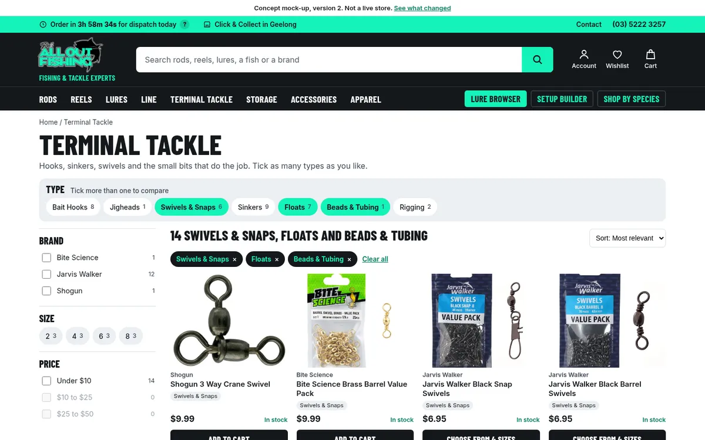
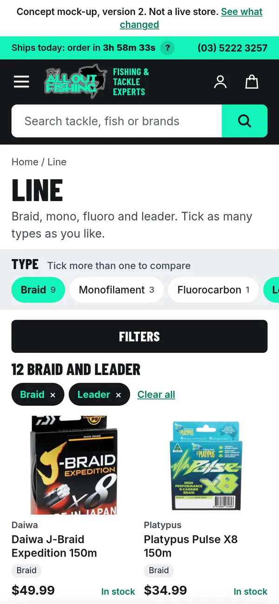
Brand, size and price down the side
What you said
Peri: "Down the side, you'd have like your brands and then like your size and your price bracket stuff."
What we did
Every browse page now has Brand, Size and Price down the side, and the Lure Browser has Brand and Price too. On line, Size reads as breaking strain (6lb, 10lb, 20lb). The numbers next to each option show how many products you'd get, so nobody ticks their way to an empty page. On a phone they sit in one Filters panel. Lure size needs a size field in your product data, so it's in the developer brief for when that's there.
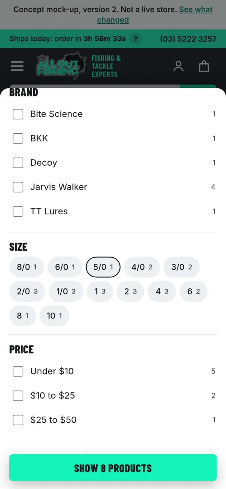
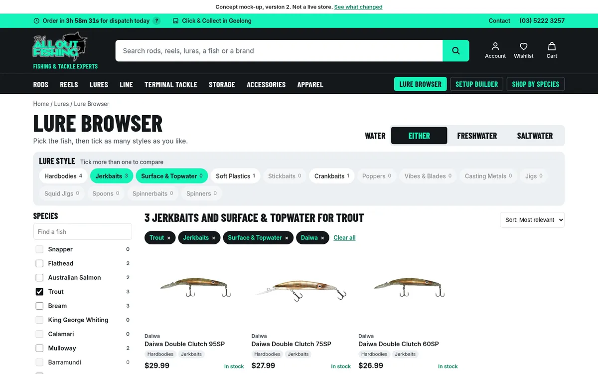
A cleaner phone header
What you said
Angus suggested moving Lure Browser, Setup Builder and Shop by species off the top of every page and into the side menu. Peri: "I think it's perfect. Absolutely."
What we did
The three buttons now live in the menu, where they were already listed, so every page on a phone starts with the logo, search and the shop. The menu also opens each category in place, so Bait Hooks is three taps away.
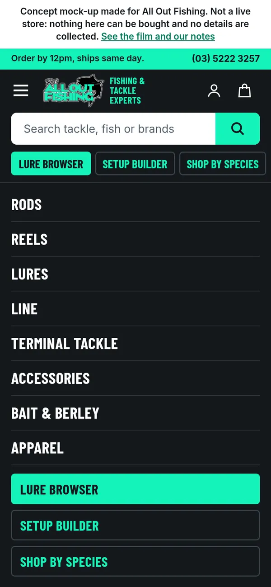
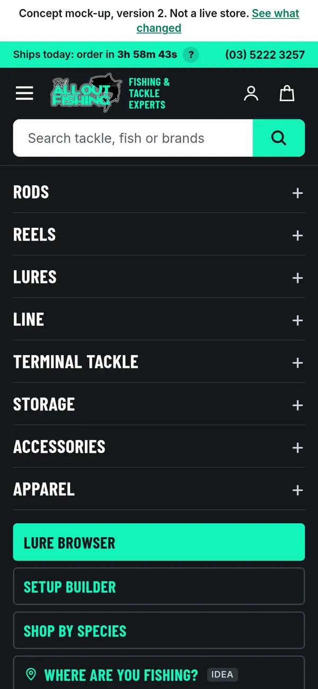
Shorter dispatch and Click & Collect
What you said
Angus: "Click and collect at our Geelong shop. I feel like this is just a bit wordy." You liked the idea of a countdown on the day and a plain "next dispatch" the rest of the time, with Melbourne time made clear for people in Perth.
What we did
The strip now says either "Order in 2h 14m 05s for dispatch today" (counting down in seconds) or "Next dispatch tomorrow at 12pm". A little ? explains it is 12pm Melbourne time, Monday to Friday. Click & Collect is four words. The 12pm cut-off is from your current site. Public holidays aren't handled yet, so that's one for your developer.
Price match and reviews: left blank
What you said
Peri: "We do price match, but just online with price matching, I don't think we're at a stage" and "We haven't got enough reviews yet." Angus: "you could just leave it blank. There's nothing wrong with that."
What we did
"We price match" is gone from the top strip, the trust row and the product page. The reviews block and its placeholder cards are gone too. The section is now called Why shop with us, which was Hamish's point that "buy" feels transactional. It has three things you do every day: same-day dispatch, Click & Collect, and advice from people who fish.
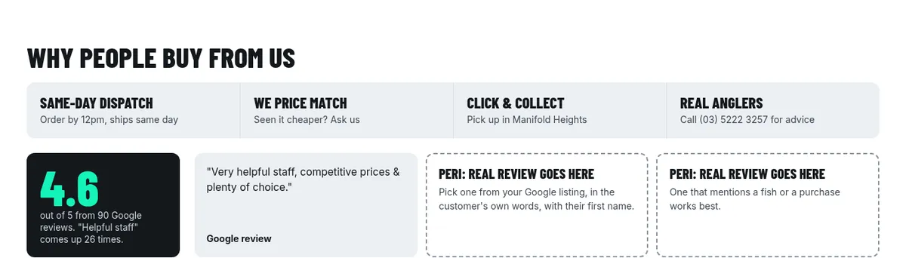
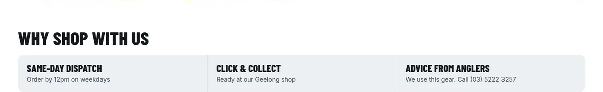
Search bolds what you typed
What you said
Angus: "it would be nice if it highlighted what it's matching." Peri: "See how it bolds it? Yeah, definitely." You also liked typing trout and getting "trout lures" straight to the Lure Browser with trout ticked.
What we did
Type "tro" and the matching letters are bold wherever they appear in a suggestion. Trout lures and Coral trout lures go straight to the Lure Browser with that fish ticked. Search now also finds categories, so typing "swiv" offers Swivels & Snaps, and it covers terminal tackle, line and storage products as well as lures. It works on phones too, and you can move through it with the arrow keys.
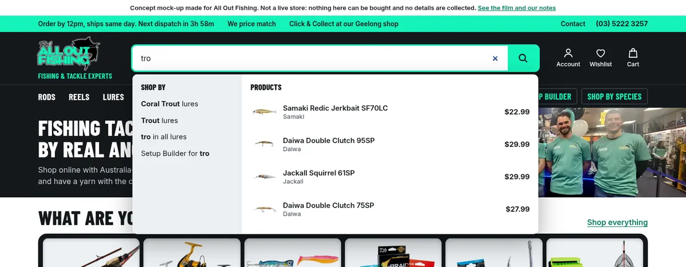
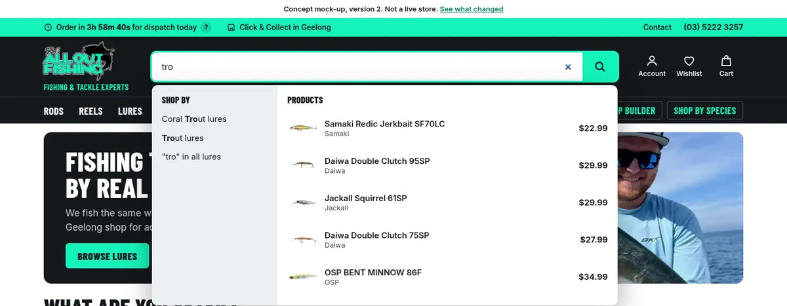
A big catch up top, inside the page
What you said
Hamish noticed "the way that the banner carries over" past the edge. Up top you want people "holding up big fish": "it gets you excited", fishing FOMO. The team photo is for trust, further down.
What we did
The top of the homepage is now one of your own photos: a crew member with a yellowtail kingfish offshore. It sits inside the page width with rounded corners like everything else, and it's cropped on purpose for phones and desktops. The team photo moved down to About Us. The category tiles lost the dark box behind them that Angus said he hadn't seen anywhere else, and Storage replaced Accessories as the sixth tile. All six tiles still fit on a phone screen.
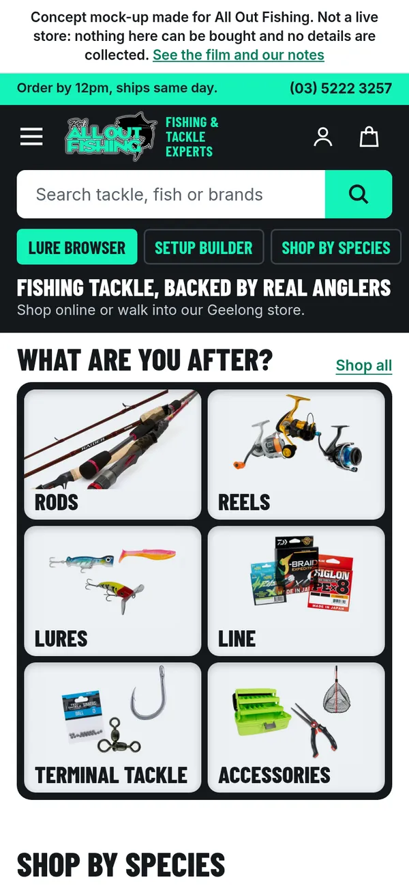
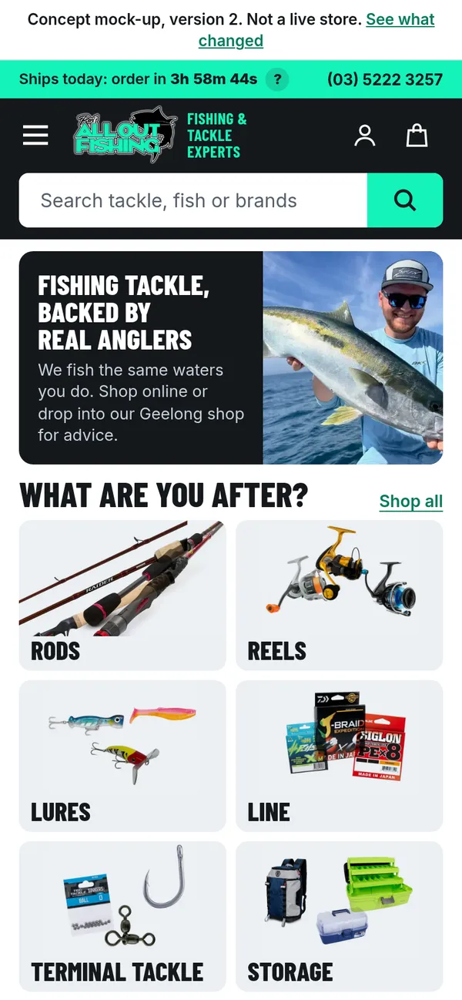
A video lower down
What you said
Peri: "down the bottom there, I'll put a video on there for sure." Hamish suggested a 30-second snippet of you reeling in fish in All Out gear, more aspirational than a shop tour. Michael asked about a video across the top, and we agreed it would slow the page and pull people away from shopping.
What we did
A We're anglers first section sits near the bottom with a play button. The video is meant to load only when someone taps it, so the page stays quick on a phone. For now the button just shows a note, because there's no reel yet. The words are yours from the meeting: you fish the same waters, and you can tell people how a lure swims. The poster is a placeholder until the reel is filmed.
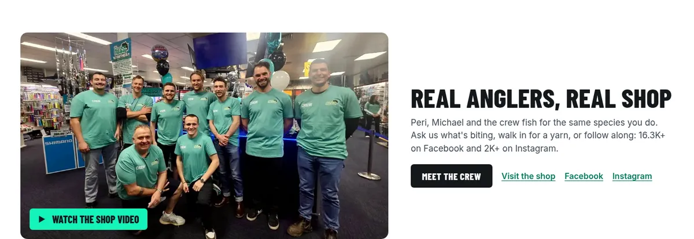
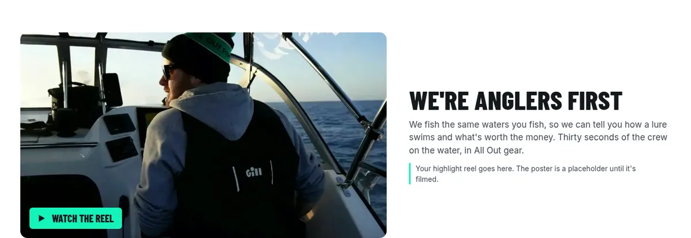
Guides and About Us, no fishing reports
What you said
Peri: "I'd have like 2 bars there, one that says guides and then one says about us." "There's no fishing reports. I wouldn't put fishing reports in there." Shopping first, and this down the bottom.
What we did
Fishing reports are gone. The bottom of the homepage has two big doors: Guides (how to catch, buyer's guides, tackle tips, cookbook) and About Us (the crew, the shop, your socials). The footer is grouped the same way.
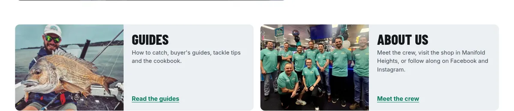
Cheapest size shown first
What you said
Peri: "Ours automatically shows a $169 price. Ultimately, I wanted to show the $159 price first."
What we did
Product cards show "From" and the cheapest size, for example From $3.95 on Jarvis Walker sinkers. Product pages open on the cheapest size, and the price changes as you pick another. The reel's size prices are examples.
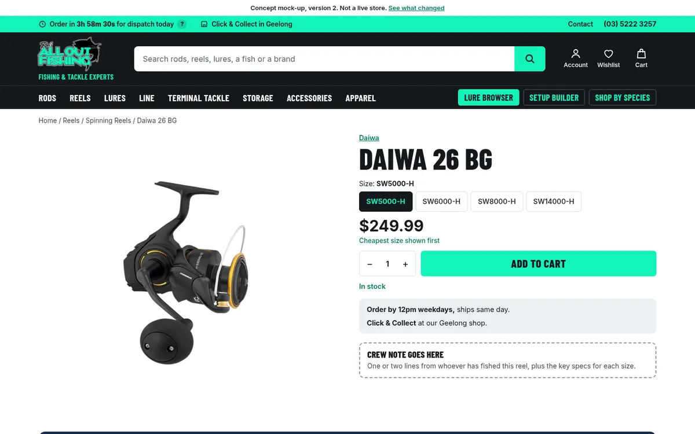
Where are you fishing? (an idea for later)
What you said
Peri: "Victoria, and all the waterways are highlighted. Zoom in on one. Let's go Lake Eildon", showing "the main target species… boat ramp access, land-based access… the gear you're going to need." Hamish: tell us where you're going, then what you want to catch, or "give me the essentials." Peri asked if there were 150 to 200 Victorian waters to cover, and said it isn't for this launch.
What we did
It now runs on real data: 266 Victorian waters from the Victorian Fisheries Authority's stocking records (7,000+ stockings since 2016), plus Corio Bay and the Barwon estuary, with about 400 boat ramps and 3,300 jetties and fishing spots from OpenStreetMap. Pick a water on the map or the list, sort by distance from the shop, or tap a fish to see every water it's stocked in. Each water shows a photo, what's stocked and when, the nearest ramps, and one tap to the Lure Browser with that fish ticked, or "just give me the essentials". It's only linked from the phone menu and this page, so it stays out of the way for launch. One thing to know: the VFA's data is free for non-commercial use, so a real version on the shop would need their permission first.
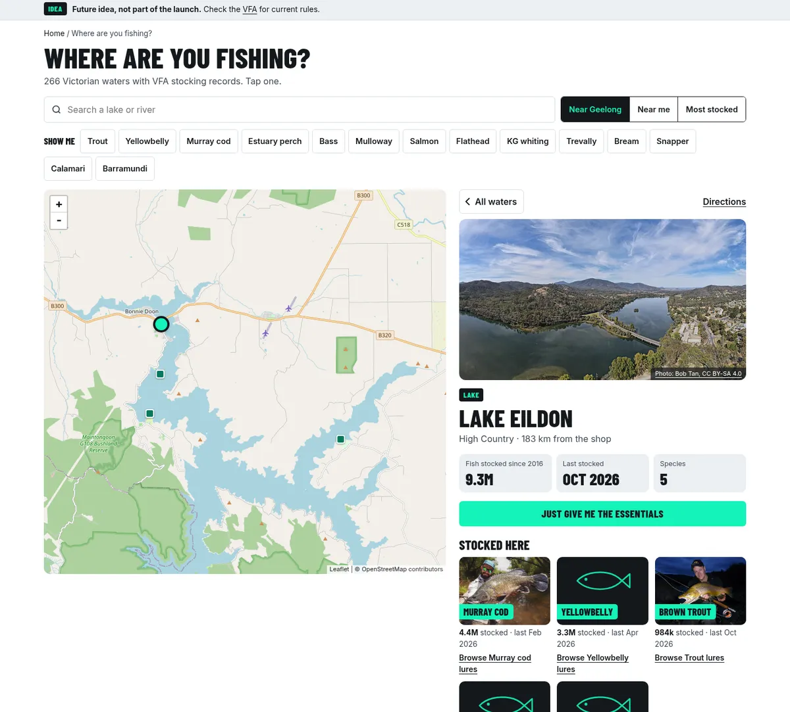
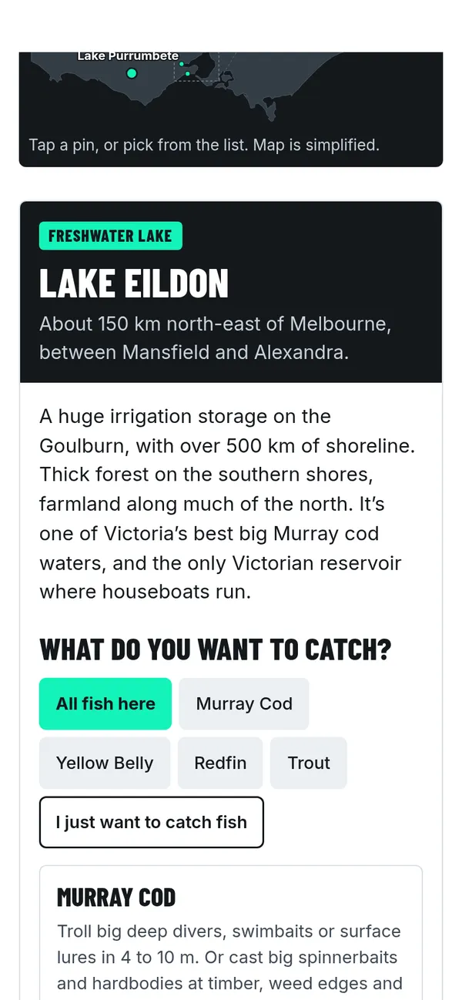
Every category works now, with more products
What you said
Michael asked for "a more polished version" to take to your developer, and Peri wanted every category to work the way the Lure Browser does.
What we did
Rods, Reels, Accessories and Apparel now work like Terminal Tackle: tick as many types as you like, with brand, size and price down the side. Bait & Berley sits inside Accessories. There are 377 products across the mock-up, from 53 brands. 145 are your own listings, with your prices and photos: 96 lures from 2 November, plus 49 rods, reels, line, terminal tackle, storage and accessories. The rest are Jarvis Walker, Rovex, Tsunami, Net Factory and Fintek items at the maker's RRP, to fill out the pages. Every brand also has its own page with everything from that brand, so Daiwa shows Daiwa rods, reels, line, storage and lures together. Your preview site's catalogue was locked, so your full range drops in once we have the export.
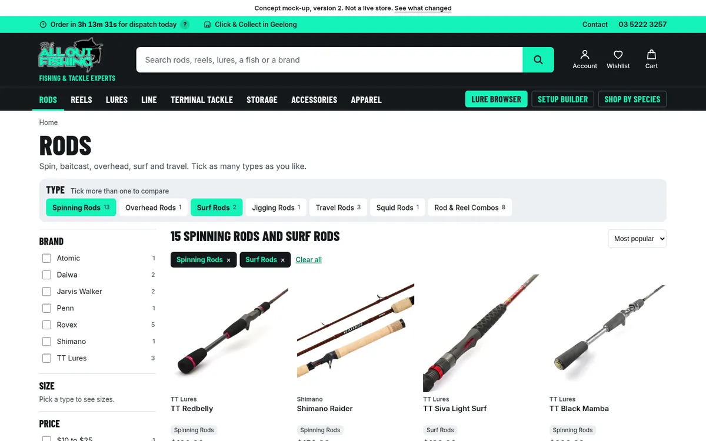
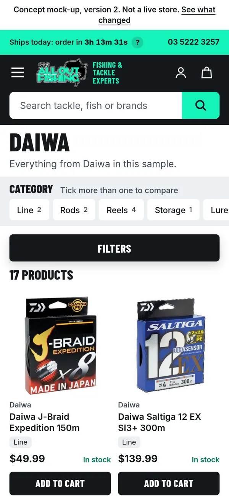
The rest of the shop: cart, about, contact and help
What you said
You wanted the mock-up to feel like the whole website, not just the home page.
What we did
New pages: a working cart (add things anywhere and they show up, with quantities, totals and Click & Collect), About Us with the whole crew, Contact with tap-to-call and directions, Shipping & Returns, Click & Collect, an FAQ, every guide from your current site sorted into How to catch, Buyer's guides and tips, and Cookbook, and an A to Z of brands. Facebook and Instagram are logos in the footer now. Where we didn't know something (opening hours, your returns policy, delivery prices, a line about each of the crew), there's a dashed box saying what goes there, so nothing is made up.
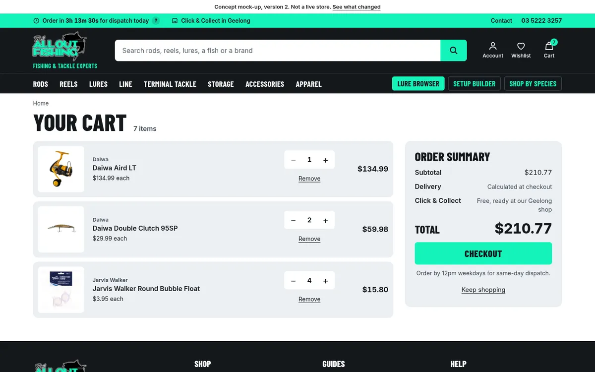
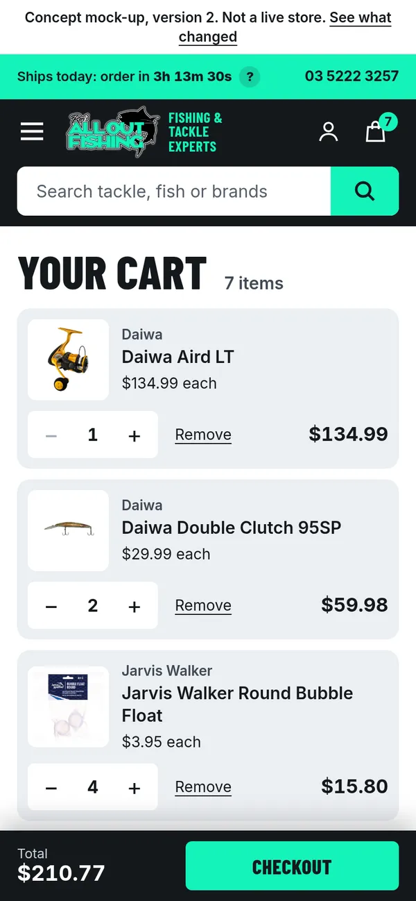
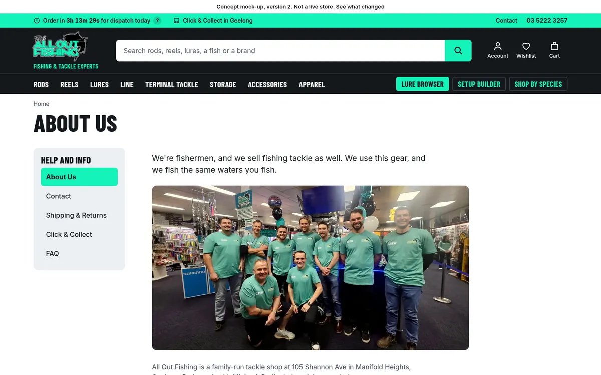
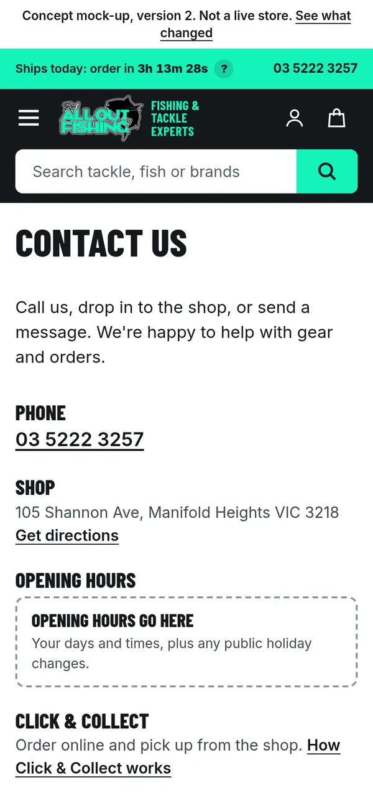
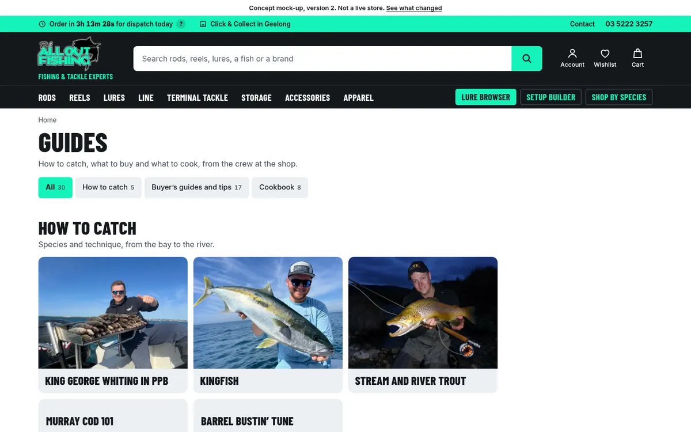
Polish from the rules we use on our own shop
What you said
Angus mentioned the shop rules we've been building for Hobbies Direct, tested on real screens. Plenty of them suit any tackle shop.
What we did
We went through them and kept the ones that fit All Out Fishing. Product photos are never cropped, so the whole packet shows. Filter chips have small rounded corners rather than pill shapes, which also matches Peri's "rounded, but not oval". Card titles stop at two lines so every card lines up. On a phone, the product page puts the name above the photo, and a price and Add to Cart bar sits at the bottom until the real button scrolls into view. Adding to cart shows a small note with the product's photo. Long filter lists show the 8 biggest first, with Show all. Phone numbers are written 03 5222 3257, with no brackets. We also checked every page at 12 screen widths, from a small phone (320px) to a big desktop (1920px), and fixed everything that scrolled sideways, wrapped badly or was too small to tap.
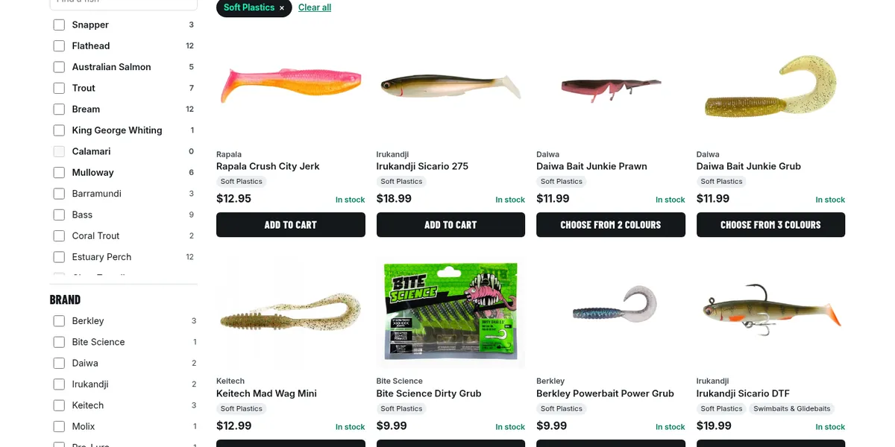
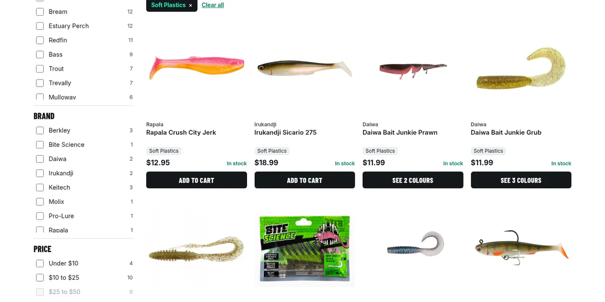
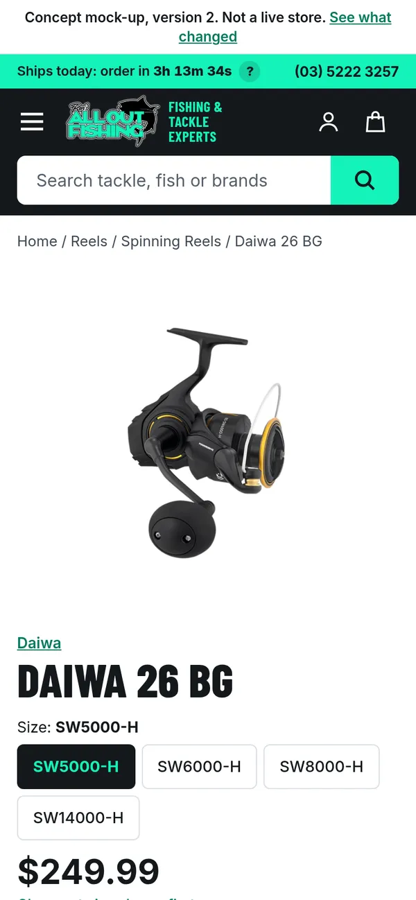
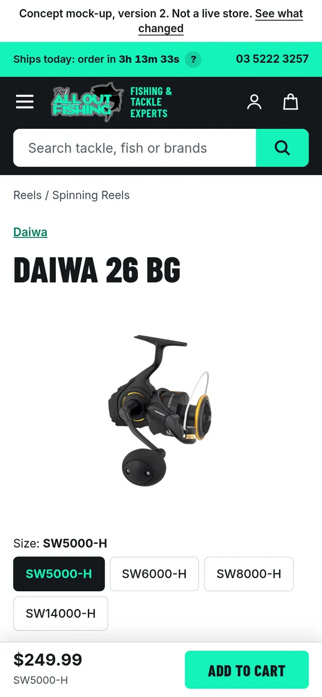
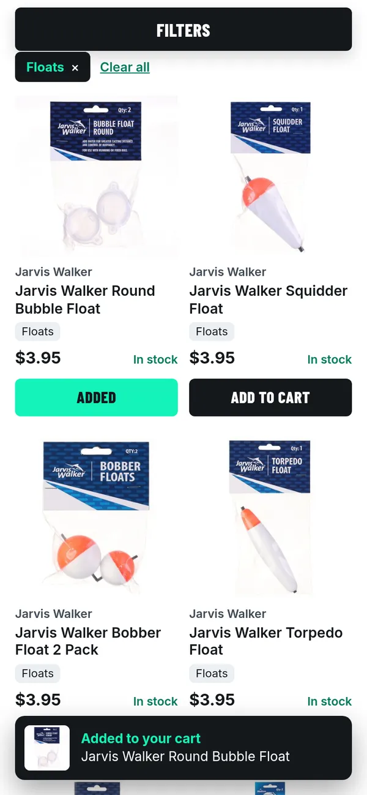
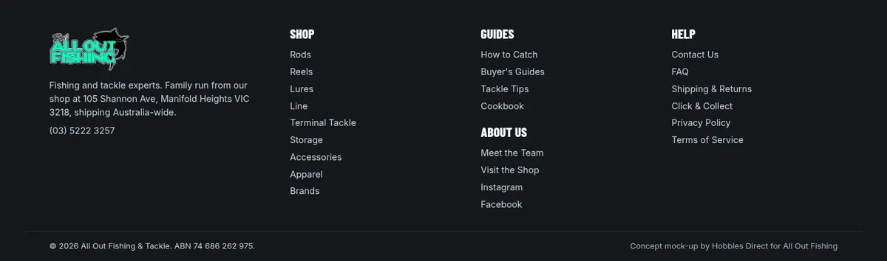
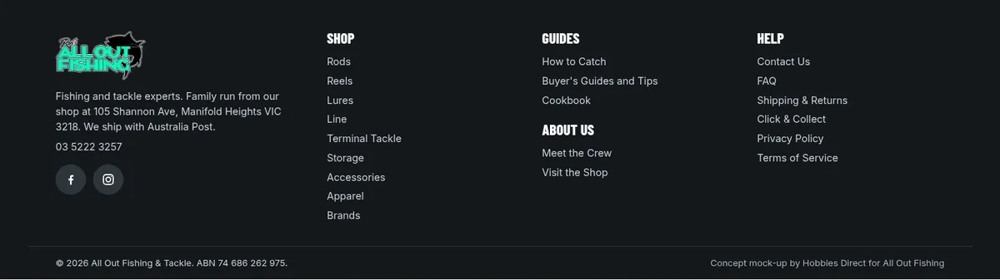